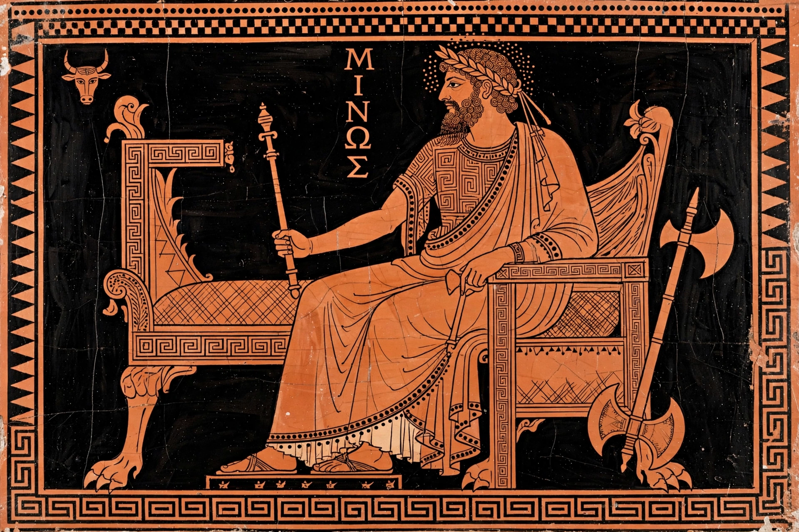

| Minos | |
|---|---|
 | |
| Abode | Crete; later the Underworld |
| Parents | Zeus and Europa |
| Siblings | Rhadamanthus, Sarpedon |
| Consort | Pasiphaë |
| Children | Ariadne, Phaedra, Androgeus, Deucalion, Glaucus, Catreus, the Minotaur (stepson) |
In Greek mythology, Minos (Ancient Greek: Μίνως) was a king of Crete, son of Zeus and Europa. He was a famed lawgiver — according to tradition he received the laws of Crete from Zeus himself — and his name became associated with the Bronze Age civilisation of Crete, which the archaeologist Sir Arthur Evans called "Minoan" after him.
Minos vied with his brothers for the Cretan throne and prayed to Poseidon for a sign; the god sent a magnificent white bull from the sea, but Minos refused to sacrifice it, and Poseidon punished him by making his wife Pasiphaë conceive a passion for the bull. From that union came the Minotaur, the half-man, half-bull monster that Minos concealed in the Labyrinth built by the craftsman Daedalus. To feed the monster, Athens — having lost a war and caused the death of Minos's son Androgeus — was compelled to send a tribute of seven youths and seven maidens, until the hero Theseus slew the Minotaur with the help of Minos's daughter Ariadne.
Minos also imprisoned Daedalus and his son Icarus in Crete. Later, pursuing Daedalus to Sicily, Minos was killed there — according to one account, scalded in a bath by the daughters of King Cocalus. After death, Minos became a judge of the dead in Hades, together with his brother Rhadamanthus and Aeacus; in Dante's Inferno he assigns sinners to their circles by wrapping his tail around himself.
Thucydides treated Minos as a historical figure, the first man to build a navy and suppress piracy in the Aegean. Modern scholars debate whether "Minos" was a personal name or a royal title, and the decipherment of Linear B has not settled the question.
See also: Minotaur; Labyrinth; Ariadne; Daedalus; Theseus; Minoan civilization; Knossos.